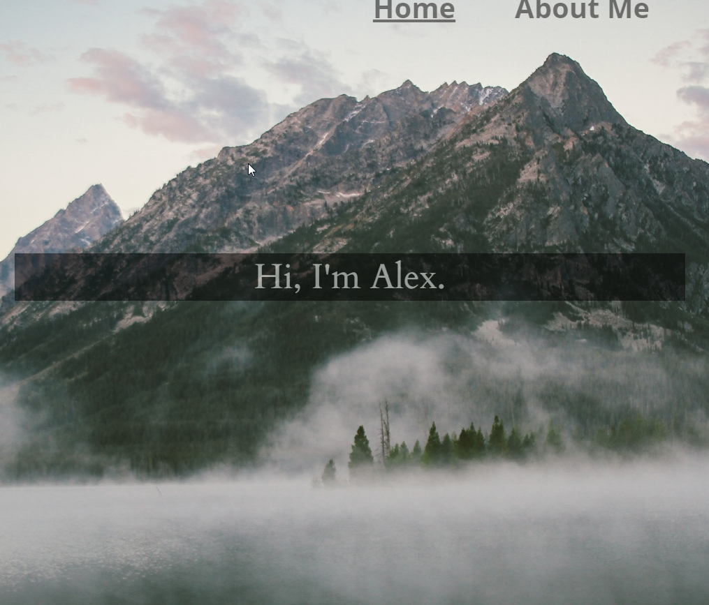

Projects
My Portfolio
An in-depth look at Alex Ngo!

This portfolio started when I realized I want a way for people to see what I’ve done, and be able to learn more about how I did it. So set out to make my own website, and hopefully learn some new things along the way. First I sketched out how I wanted to look, and from there I began to create the structure of this project. I wanted this to use switch views to navigate around pages. So I created the index.html which is the base page and switching between pages just changes the route which changes the view. This is something I’ve been wanting to learn in order to create single page applications, and so I began to learn how to use Angular’s ngView to switch views.
Once I learned how to switch from view to view, I then created the home page the first iteration of the one that is currently up. I wanted there to be a greeting immediately so they see that it is my webpage, and for the home page to be the jumping off point, so I left it simple with a background and a greeting.
A lot of decisions were made purposefully in order to improve UX, such as the menu; the reason the menu is as such and not a dropdown button (hamburger button), is because I wanted everything immediately visible to visitors, so they could easily navigate to projects without any confusion. The arrows pulse so you know they are there and can use them to navigate, and also give the impression that you can arrow over to navigate, so I implemented that even though I knew not many users would use that feature. The technologies for each project, have a tooltip so if the symbol isn’t recognized, they can see what it is.
The main thing I wanted to do, was to give a more in-depth view of my myself and my projects for anyone who is interested.